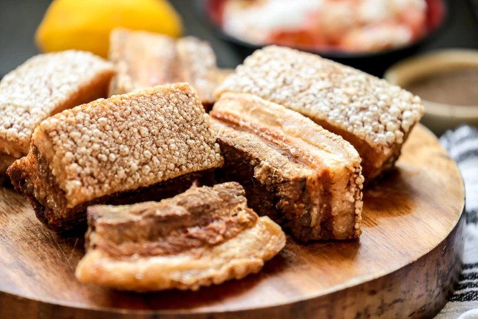
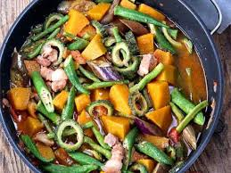
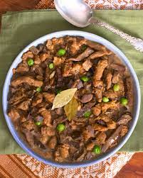
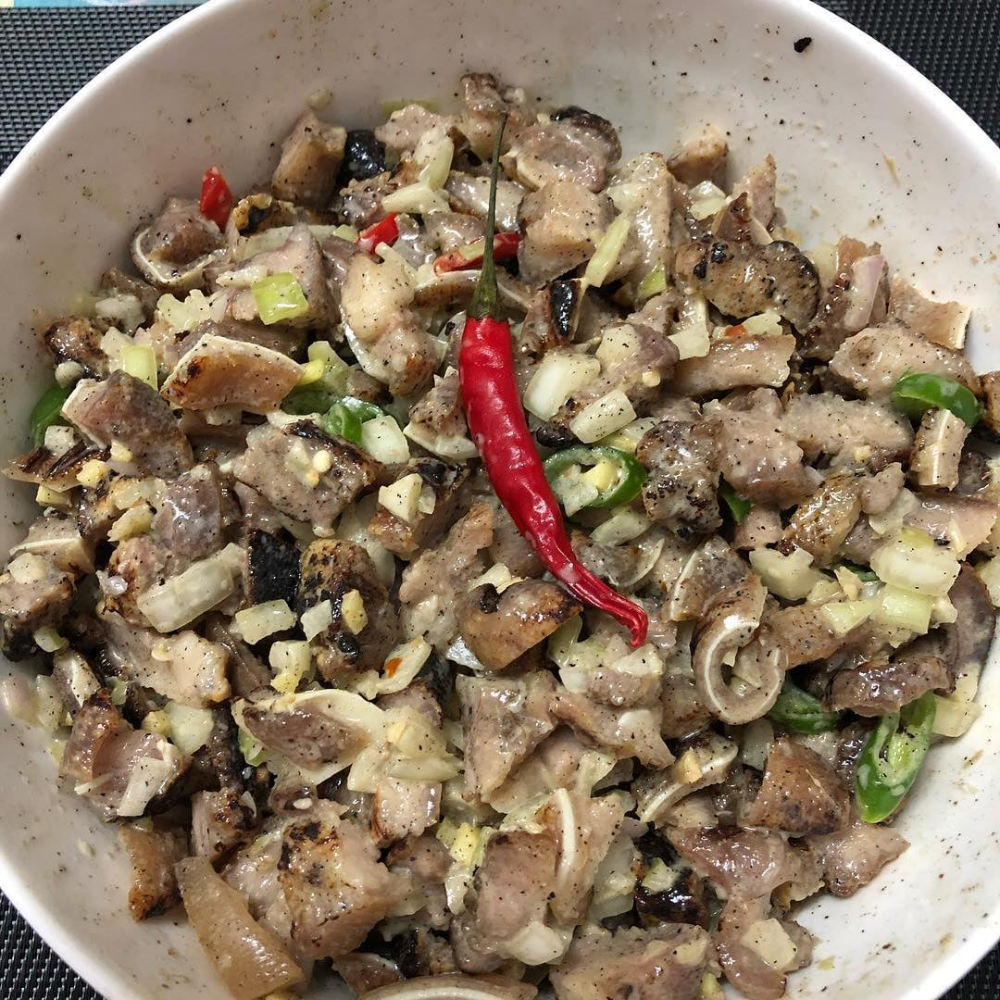

Dinuguan is a Filipino savory stew usually of pork offal and/or meat simmered in a rich, spicy dark gravy of pig blood, garlic, chili, and vinegar.

Bagnet, also locally known as "chicharon" or tsitsaron in Ilocano, is a Filipino dish consisting of pork belly boiled and deep fried until it is crispy. It is seasoned with garlic, black peppercorns, bay leaves, and salt.

Pinakbét is a traditional Filipino vegetable dish that originates from the Ilocos Region of the Philippines. The dish consists of a variety of vegetables and flavored with bugguóng munamón or armáng. It is commonly served as a side dish and is often accompanied by rice and grilled or fried meat or seafood.

"Igádo" means "liver" in Spanish (hígado) and refers to a Filipino pork and liver stew from the Ilocos region. It is a savory dish typically made with pork, liver, and other organ meats, simmered in a sauce of soy sauce, vinegar, and other seasonings, and often includes vegetables like peas, carrots, and bell peppers.

Dinakdakan is an Ilocano dish from the Philippines made from grilled and chopped pork parts, such as ears and face, tossed with a tangy dressing of vinegar or calamansi juice, onions, and chilies. The dish is traditionally enriched with mashed pig's brain for a creamy texture, but modern versions often substitute it with mayonnaise. It is commonly served as an appetizer or "pulutan" (a dish to eat with alcoholic drinks) or as a main dish with rice.
Longganisa are usually fresh or smoked sausages, typically made with varying ratios of lean meat and fat, along with garlic, black pepper, salt (usually coarse sea salt), saltpeter, muscovado or brown sugar, and vinegar. Variants may add paprika, chili, anise liqueur, and other spices.